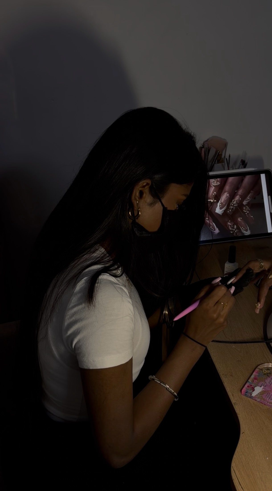

L'Artiste

À 23 ans, j'ai fait de ma passion un métier d'art et d'exigence en obtenant mon diplôme de prothésiste ongulaire. Je vous reçois dans mon salon privé dans le Val-d'Oise, pensé comme un écrin ténébreux et raffiné.
Mon engagement : sublimer vos mains tout en préservant la santé naturelle de vos ongles grâce à des protocoles ultra-rigoureux et des produits d'une qualité exceptionnelle.